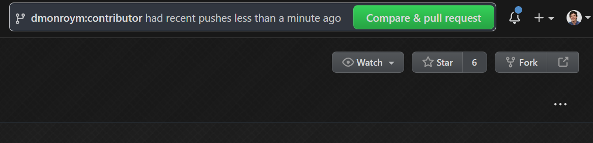

시작하기
필수 준비물
- Visual Studio Code
- Hugo
- Git . Git 및 GitHub에 대한 자세한 정보는 Quickstart 가이드를 참고하세요.
참고 링크
연습 영상
코드
이 저장소에 대한 작업 기여는 포크(fork) 모델 을 통해 이루어집니다. 참여자는 워크숍의 자신만의 “포크 된” 버전에 변경 사항을 적용한 후, 해당 변경 사항을 “풀 리퀘스트(pull request)”로 제출합니다.
시작하기:
- 오른쪽 상단의 Fork를 클릭하여 저장소 를 포크(fork)합니다:

- git bash에서 다음 명령어를 실행합니다, (replacing [user-name] with your GitHub user name):
\> git clone https://github.com/[user-name]/workshops.git
\> cd workshops
\workshops> git remote add upstream https://github.com/NuevoFoundation/workshops.git
\workshops> git remote set-url --push upstream no_push
위의 마지막 명령어는 “풀 리퀘스트(pull request)”를 거치지 않고 실수로 이 저장소에 업로드(push)되는 것을 방지합니다.
위 명령을 실행한 후 git remote -v 명령을 실행하면 다음과 유사한 결과가 표시됩니다:
\workshops> git remote -v
origin https://github.com/dmonroym/workshops.git (fetch)
origin https://github.com/dmonroym/workshops.git (push)
upstream https://github.com/NuevoFoundation/workshops.git (fetch)
upstream no_push (push)
구축 및 테스트
변경 사항을 구축하고 테스트하려면 Hugo를 사용해야 합니다. 올바른 설치 지침을 따른 경우 Hugo는 PATH에 포함되어 있어야 합니다 (그렇지 않으면 컴퓨터를 재시작하세요).
\> cd workshops
\workshops> hugo -D server
몇 가지 구축 정보가 출력되겠지만 가장 중요한 라인은 다음과 같습니다: Web Server is available at //localhost:1313/ (bind address 127.0.0.1)
이제 웹 브라우저를 열고 //localhost:1313/ 에 접속하면 사이트가 표시되는지 확인할 수 있습니다.
포크(fork) 업데이트 하기
자신의 포크(fork)를 최신 상태로 유지하려면 가능한 한 자주 업데이트하는 것이 좋습니다. 새 브랜치(branch)를 만들기 전에 변경 사항을 가져와 자신의 포크(fork)에 업로드(push)해야 합니다. 방법은 다음과 같습니다. (다른 브랜치(branch)가 필요하다면 master 대신 해당 브랜치를 사용하세요).
\workshops> git fetch --all --prune
\workshops> git checkout master
\workshops> git merge upstream/master
\workshops> git push origin master
샘플 워크스루 (Sample Walkthrough)
시나리오: Getting Started 페이지에 단순한 변경을 추가하고 풀 리퀘스트(pull request)를 제출해 봅시다.
위의 지침을 따르세요.
코드 지침을 완료하면 로컬에 워크숍 저장소 복사본이 생깁니다.
주제 브랜치(branch) 만들기
포크가 업데이트되었는지 확인한 후 이 작업을 진행하세요:
\workshops> git checkout master
\workshops> git checkout -b [branch-name]
\workshops> git push --set-upstream origin [branch-name]
VS Code로 저장소 열기
VS Code를 실행하고 Open Folder를 선택하여 워크숍 폴더로 이동한 후 열기를 클릭합니다.
파일 탐색 및 수정하기
수정하는 내용에 따라 사이트가 어떻게 구축되는지 더 잘 이해하고 싶을 것입니다.
우리의 경우 이 파일을 수정하려고 하므로, content\english\guidelines\getting-started.md로 이동합니다. “Welcome!”이라는 단어에 느낌표 두 개를 추가해 주세요.
수정 전: Welcome!
수정 후r: Welcome!!!
변경 사항 커밋(commit)
“git status” 명령을 실행하면 지금까지 한 모든 변경 사항과 모든 파일 이름이 표시됩니다. 그런 다음 git add 명령으로 스테이지(stage)하고 커밋(commit) 및 업로드(push) 명령을 실행합니다. 다음과 같은 명령을 사용합니다:
\workshops> git status
\workshops> git add content/english/guidelines/getting-started.md
\workshops> git commit -m "Added exclamations"
\workshops> git push
팁: 모든 파일을 추가하고 한 번에 커밋(commit)하려면 다음 명령을 사용할 수 있습니다:git commit -am "message here" 과 git push
풀 리퀘스트 생성하기
축하합니다! 이제 모든 필요한 변경 사항을 완료했으며 마지막 단계는 검토를 받고 프로덕션에 반영하는 것입니다.
포크된 GitHub 저장소로 이동하면 최신 업로드(push)를 기반으로 풀 리퀘스트 생성 제안이 표시됩니다.

풀 리퀘스트가 표시되지 않으면, Pull Requests -> New pull request로 이동합니다.

여기서 가장 중요한 점은 브랜치(branch)를 올바르게 선택하는 것입니다 (base와 head).
Create pull request 버튼을 누르고, 설명과 제목을 입력한 후 검토자가 승인하여 병합할 수 있도록 기다립니다.